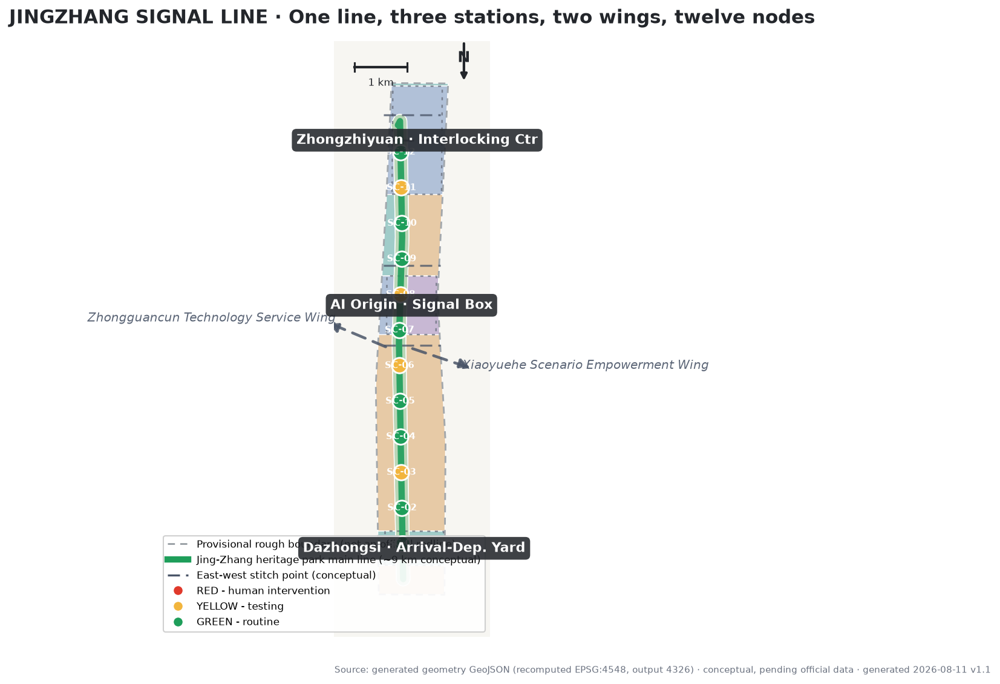
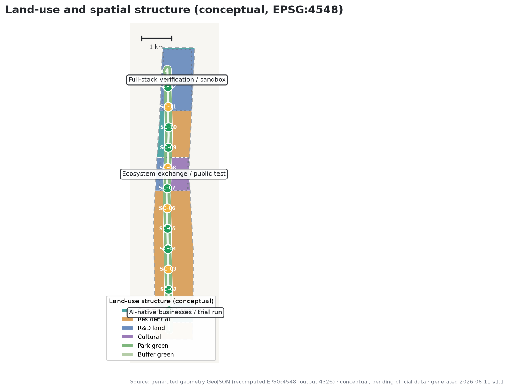
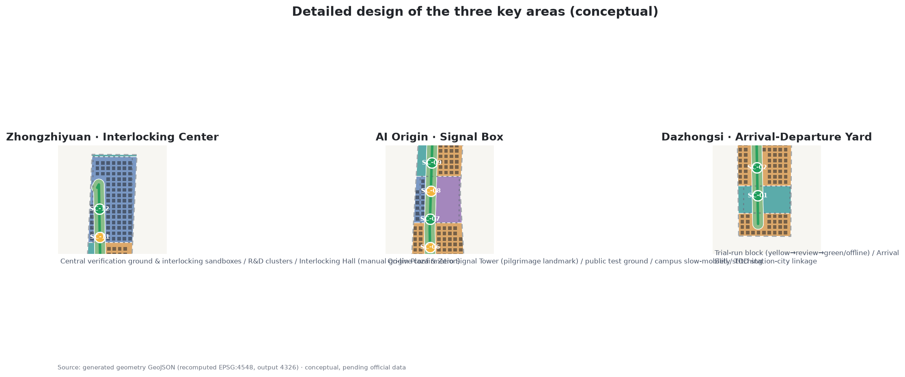
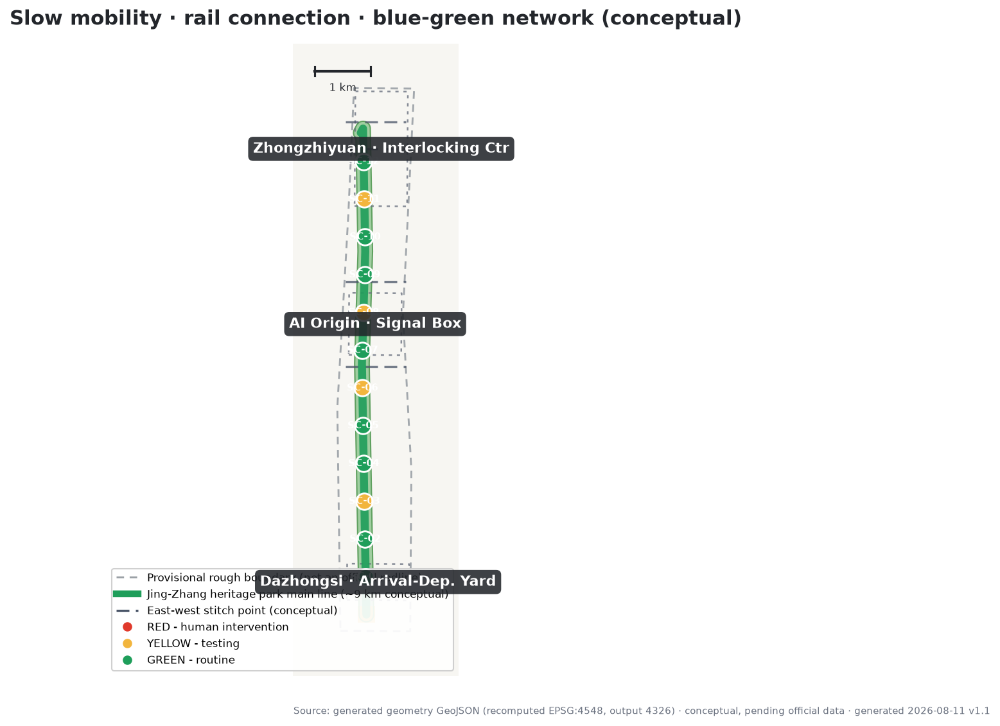
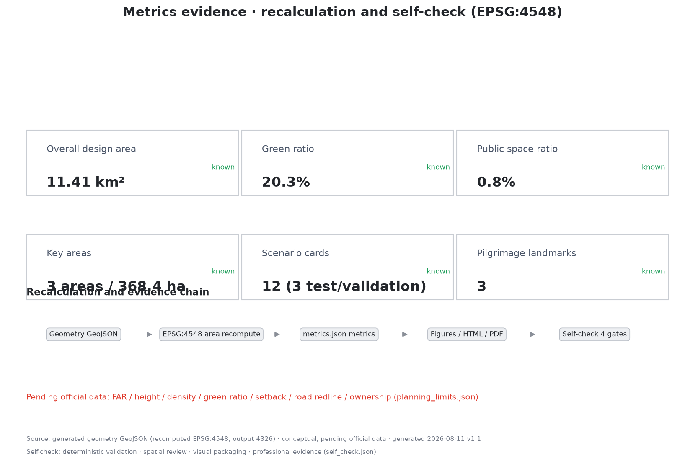

JINGZHANG SIGNAL LINE: Translating a Century of Railway Signalling Discipline into a Governance and Spatial Protocol for the AI Innovation Belt
Taking the century-old railway signalling discipline (red-yellow-green grades, interlocking, fail-safe operation, manual confirmation of departure) as the master concept, the 11.4 km² overall design area is organized into one heritage-park main line, three signal stations (Zhongzhiyuan Interlocking Center, AI Origin Signal Box, Dazhongsi Arrival-Departure Yard), two wing routes, and twelve signal-graded scenario nodes. All spatial proposals are conceptual, based on provisional boundaries; metrics are recalculated from the submitted GeoJSON in EPSG:4548.
JINGZHANG SIGNAL LINE
Translating a century of railway signalling discipline into a governance and spatial protocol for the AI innovation belt
In 1909, the Jing-Zhang Railway opened, the first trunk railway built independently by Chinese engineers — a "railway of self-respect" that answered the question of whether the country could build its own railways. More than a century later, as AI enters urban public space, the hardest question is not "can it be used" but "can it be understood, can it be stopped, can it go live safely." Railway operations answered the same questions over a hundred years with signalling discipline: red-yellow-green grading, route interlocking, fail-safe operation, and manual confirmation before departure.
This proposal translates that discipline into a "Signal Line": every AI service entering public space runs like a train — drives on the signal, interlocks its route, departs only with manual confirmation, and can be rolled back on failure. The signal is not a restriction; it is the safety infrastructure that lets more AI scenarios dare to go live.
Design Basis and Source List
The primary basis is the Qualification Pre-announcement for the Centennial Jing-Zhang AI Innovation Belt Urban Design International Solicitation, issued by the Haidian Branch of the Beijing Municipal Commission of Planning and Natural Resources on 2026-05-09; its textual boundaries, three scope levels, three key areas, and design tasks frame the assignment Source. The agent-facing open-call taskbook (a user-provided cleared document) adds the three positionings, five functions, three-areas-two-wings layout, six tasks, and ten co-creation principles Source. The proposal follows the Measures for the Administration of Urban Design on the integration of public space and urban character Standard and distinguishes known controls from items pending confirmation Standard.
Boundary status must be stated first: as of generation, no official precise redline was publicly available; the proposal uses the maintainer-derived provisional rough boundary based on the announcement's textual extent and approximate areas (brief/site-package/geometry/provisional_boundaries.geojson, PROV-SITE-001 and PROV-KEY-001/002/003) Source. In this package, geometry/site_boundary.geojson and geometry/key_areas.geojson are both marked provisional_constraint with official_boundary=false; they serve only generation, display, and discussion and must not be treated as a redline, approval basis, or precise-area basis. The organizer's data gap does not block content scoring; when official polygons are released, all layers and metrics must be recalculated package-wide Spatial data Metric.
Actual sources, licenses, and restrictions are recorded in full in sources.json; professional-standard responses in standard_matrix.json; design-depth evidence in design_depth_matrix.json; and task coverage in compliance_matrix.json. The narrative cites evidence only where directly relevant.

Three-Level Scope Framework
The three scope levels follow the announcement: the coordinated research area of about 43.6 km² answers "how to organize the AI industrial ecosystem and future urban form"; the overall design area of about 11.4 km² answers "how to map industrial space, urban renewal, transport and municipal infrastructure, and urban character"; and the key detailed design area of about 368.4 ha (three key areas) answers "how to reach detailed design depth in each area" Source Depth. All three levels map the announcement tasks 1.3, 1.4, 1.5 and agent tasks 1–6 in compliance_matrix.json Depth.
| Level | Design question | Proposal answer | Evidence |
|---|---|---|---|
| Coordinated research area | AI ecosystem and future urban form | Innovation chain: "university origin—open collaboration—verification and departure—application go-live—international communication" | Spatial data、Metric |
| Overall design area | Mapping industry, renewal, transport, character | One main line, three signal stations, two wings, twelve nodes | Spatial data、Spatial data |
| Key detailed design area | Detailed design of three areas | Interlocking Center, Signal Box, Arrival-Departure Yard: functions and spatial moves | Spatial data、Spatial data、Spatial data |
The spatial organization of the Signal Line is "drawing the governance protocol into the city": red designates spaces requiring human intervention and no automation (the Interlocking Hall, manual fallback service points); yellow designates testing-period spaces (sandbox, public test ground, trial-run line); green designates routine spaces (the heritage-park main line, slow-mobility spine, everyday scenario nodes). The three grades interweave along the main line so residents can read the operating status of every AI service directly in public space Standard.
Coordinated Research Area: Industry and Future City Research
The coordinated research area takes the "Jing-Zhang Signal Protocol" as its governance thread and organizes Haidian's AI factors into a verifiable innovation chain: universities and institutes provide origin research (Tsinghua, Peking University, Beihang, and the Xueyuan Road cluster), Zhongguancun provides capital, data, compute, and technology services, and the three key areas relay from R&D verification to application go-live Source Source. The relationship with the Beiwu community, Future Science City, Huairou Science City, and the Economic-Technological Development Area is framed as "interconnected routes": the Signal Line is the application-facing verification and go-live interface, the science cities are origin-innovation bases, and the E-Town is the scale-manufacturing and landing interface — rail connections along the innovation chain rather than homogeneous competition Source.
Future-city-form research focuses on three new infrastructures: the compute route (edge compute stations and public compute interfaces), the data route (public interfaces for data-factor registration and circulation), and the trust route (the public institutions of signal protocol, human review, and failure rollback). These three routes are not isolated digital systems; like railway signal boxes, they are spatial facilities that are visible, open to public observation, and auditable in the city Depth Depth.
The coordinated research area makes no commitment on industrial scale, investment, or attraction results. Factor-allocation mechanisms (land, space, industry, capital, talent, compute, data, scenarios) are all framed as mechanism proposals for professional teams and competent authorities to deepen Source Standard.
Overall Design Area: Urban Renewal and Regulatory-Plan-Level Urban Design
The urban renewal framework for the overall design area (about 11.4 km²) follows the conceptual logic of "retain the main line, renew the nodes, build only the landmarks": retain the Jing-Zhang heritage park main vein and historical-cultural resources along it; renew qualified old industrial areas, station surroundings, and underused land into signal stations and scenario nodes (renewal proposals are conceptual and await ownership, heritage, and regulatory-plan confirmation) Depth; new construction is limited to the three conceptual landmarks — the Zero Signal Tower, the Interlocking Hall, and the Arrival Bell — plus essential new-infrastructure interfaces, avoiding large-scale demolition and construction Spatial data Spatial data.
The spatial structure is "one line, three stations, two wings, twelve nodes":
- One line: the Jing-Zhang heritage park main line, a conceptual main route of about 9 km linking the three key areas, carrying slow mobility, public activities, cultural narrative, and scenario experience Spatial data Spatial data;
- Three stations: Zhongzhiyuan "Interlocking Center", AI Origin Community "Signal Box", and Dazhongsi "Arrival-Departure Yard", hosting full-stack self-reliant verification, ecosystem display and exchange, and application go-live operations respectively Spatial data;
- Two wings: the Zhongguancun Technology Service Wing (west, supplying factor routes) and the Xiaoyuehe Scenario Empowerment Wing (east, supplying test scenarios), connected to the three stations by conceptual routes;
- Twelve nodes: twelve signal-graded scenario nodes along the main line (detailed in the AI ecosystem section) Metric.
Land-use structure (conceptual recalculation): park and green space about 232 ha (20.3%), R&D land about 209 ha (18.3%), urban residential about 531 ha (46.5%), cultural land about 67 ha (5.9%), and commercial and service land about 103 ha (9.0%) Spatial data Metric. This is an "intent layer": open space prioritized around the green main line, R&D and industry concentrated around the three stations, and residential with supporting uses along the wings. It is not an existing-condition survey or statutory land-use plan Metric.
Development intensity: statutory controls such as floor area ratio, building height, and building density are treated as "pending official data" until official regulatory-plan conditions are released; the proposal only expresses a conceptual massing tendency (concentration around the three stations, low-rise open frontage along the main line) without inferring numerical conclusions Source Metric Metric.

Detailed Design of Key Areas
Zhongzhiyuan AI Acceleration Area — Interlocking Center
Zhongzhiyuan is positioned as the "Interlocking Center" of the Signal Line: it hosts R&D, verification, and "departure" (go-live clearance) for the AI full-stack self-reliant innovation system, corresponding to the full-stack system and governance discourse functions Source Spatial data. Spatial moves (conceptual): ① a central verification ground — interlocking sandbox clusters for industry testing (SC-10) that mirror the logic of a signal box: scenarios must pass graded tests before go-live; ② R&D clusters — research land on both sides of the main line (the northern main body of the ~209 ha conceptual figure), retaining and renewing qualified existing parks; ③ the Interlocking Hall — a ceremonial space for manual go-live confirmation of AI scenarios, open to public observation and suspension, the spatial embodiment of the human-final-judgment principle Metric. Implementation dependencies: Qinghe frontage and Fifth-Ring-side open-space connections, official regulatory-plan conditions and ownership confirmation, and industry-testing qualification and safety standards.
Beijing AI Origin Community — Signal Box
The AI Origin Community is positioned as the "Signal Box": facing global AI talent and the public, it hosts outcome display, exchange and dialogue, and public experience, corresponding to the world-class AI innovation ecosystem function Source Spatial data. Spatial moves (conceptual): ① Origin Plaza and the Zero Signal Tower — one of the AI pilgrimage landmarks; the tower-top signal lamp stays green to symbolize "continuously running and open to public observation," with the honor-display system (contributor registry, milestone chronology) shown publicly; ② the public test ground (SC-11) — an open test space where citizens can participate, observe, and question, with test results and human-review records published; ③ near-campus slow-mobility stitching — connecting toward the Qinghua East Road West entrance and the university slow-mobility network to bridge campus-district-street (a conceptual stitch point; alignment awaits transport deepening) Spatial data Metric. Implementation dependencies: confirmation of heritage-protection scopes and construction-control belts (e.g., the former Qinghuayuan Station site), a survey of slow-mobility gaps, and ethics and safety procedures for public testing.
Dazhongsi AI Industry Cluster — Arrival-Departure Yard
Dazhongsi is positioned as the "Arrival-Departure Yard": it hosts go-live, operations, and urban-life integration of AI-native new businesses, corresponding to the AI+ scenario empowerment paradigm Source Spatial data. Spatial moves (conceptual): ① the trial-run line (SC-12) — a trial-run mechanism for commercial scenarios on a conceptual block: new businesses first run at "yellow", move to "green" routine operation after periodic review, and go offline if they fail review; ② the Arrival Bell — a public time-signaling landmark for AI application go-live/offline, publicly displaying the operating timetable (go-live time, review nodes, responsible parties); ③ Dazhongsi TOD station-city linkage — organizing commerce, station land, and public space around the rail station (conceptual layout; TOD scheme awaits transport and municipal deepening) Metric. Implementation dependencies: confirmation of station-area land conditions, business-format access rules, and engineering schemes for public space and rail connection.
The three areas relay "R&D—display—application" along the main line and, together with the two wing routes, form a verifiable, reversible innovation loop Depth.

AI Innovation Ecosystem, Personas, and AI+ Scenarios
Global AI ecosystem case studies (6, with transferable mechanisms)
1. King's Cross Knowledge Quarter, London: a century-old railway yard (from the 1830s) transformed into a knowledge-economy cluster, anchored by public culture (e.g., Central Saint Martins), with companies following universities and public space. Transferable mechanism: public-culture anchor first, railway heritage as brand asset Source. 2. Stanford Research Park: a university-anchored park where land and research ecology attract firms that in turn feed the university — a university-capital-enterprise loop. Transferable mechanism: near-campus spatial organization and a technology-transfer interface Source. 3. Jurong Innovation District, Singapore: a government-led advanced-manufacturing and R&D-testing cluster emphasizing living labs and industry test space. Transferable mechanism: institutionalized supply of test-and-verification space (the interlocking sandbox) Source. 4. Toronto Waterfront Quayside lessons: excessive data collection and vague governance responsibility eroded public trust and halted the project. Transferable mechanism: governance transparency and public trust are preconditions for AI districts (the signal protocol) Source. 5. Pangyo Techno Valley, South Korea: a government-led R&D agglomeration with a startup ecosystem and comprehensive innovation services. Transferable mechanism: systematic organization of an innovation-service network Source. 6. Shenzhen Hetao and Shanghai Zhangjiang regulatory sandboxes: piloting cross-border data, scenario opening, and regulatory sandboxes in designated areas, treating "rules" themselves as an innovation product. Transferable mechanism: the signal protocol can serve as a public vehicle for a regulatory sandbox, explored first within compliance frameworks Source.
The shared conclusion of the six cases: the competitiveness of an AI innovation belt lies not in building density but in the institutional and spatial efficiency of "verification—trust—go-live". The Signal Line is the tool that spatializes this conclusion Source Depth. All cases come from public sources; provenance, retrieval dates, and limits are recorded in sources.json and are used only for mechanism reference, not as official judgments on any park's current state.
User personas (6 types)
| Persona | Typical needs | Linked scenarios |
|---|---|---|
| International AI researcher | exchange, display, attending reviews, multilingual guide | SC-02/SC-08/SC-11 |
| Local founder and developer | test space, compute interface, go-live channel | SC-06/SC-10/SC-12 |
| University faculty and students | near-campus mobility, research collaboration, public classes | SC-03/SC-05/SC-11 |
| Surrounding residents (incl. families) | daily leisure, night vitality, reliable information | SC-01/SC-07/SC-09 |
| Park operators and merchants | scenario access rules, trial-run mechanism, visitor flow | SC-04/SC-12 |
| Digitally disadvantaged groups | manual fallback, accessibility, fraud protection | SC-09/SC-01 |
12 AI scenario cards (graded by signal level; 3 of them are industry test/validation scenarios)
Green scenarios (routine, periodically reviewed):
- SC-01 Signal Line slow-mobility navigation: AI navigation for slow mobility and accessible routes (combined with rail connections and the Article 39 scenario boundaries of the Barrier-Free Environment Law), with manual fallback and detour information Standard.
- SC-02 Jing-Zhang cultural AI guide: multilingual AI guide to the line's cultural narrative; materials are fact- and copyright-checked, and AI-generated content is clearly distinguished from factual content Source.
- SC-03 Origin AI service desk: an AI advisory desk for public services in the AI Origin Community; human takeover is possible, and service boundaries follow the contexts enumerated by law Standard.
- SC-04 Dazhongsi smart consumption block: smart commerce and consumption experience; data collection follows minimum necessity and explicit notice and must not force sensitive information such as facial data.
- SC-06 Edge compute station: local-inference compute nodes in public space; data stays on the device side, and compute use is publicly metered (echoing the compute route) Metric.
- SC-07 City operations AI time-sync desk: public information screens disclosing AI services' operating timetables, review nodes, and responsible parties, making "visible running status" infrastructure.
- SC-08 AI pilgrimage guide line: a conceptual tour route linking the three landmarks and honor-display nodes, serving international visitors and the public.
- SC-09 Manual fallback service points: on-site human service for seniors, persons with disabilities, and people with low digital literacy, running in parallel with smart services (referencing the parallel-channels principle of State Council Document No. 45 (2020); that document is national policy background and does not constitute a local implementation conclusion) Source.
Yellow scenarios (testing period; 3 of them are industry test/validation scenarios):
- SC-05 Park AI inspection and cleaning (test): low-speed robot inspection and cleaning pilots with restricted routes, hours, and responsible parties; nighttime operation follows light-environment requirements Source.
- SC-10 Interlocking sandbox (industry test/validation scenario 1): pre-go-live testing facilities in Zhongzhiyuan for AI enterprises, including graded tests, failure drills, and manual clearance.
- SC-11 Public test ground (industry test/validation scenario 2): an open test space in the AI Origin Community where results and review records are public and citizens can ask questions and give feedback.
- SC-12 Trial-run line (industry test/validation scenario 3): a trial-run mechanism for commercial scenarios in Dazhongsi — yellow trial run → review → green routine or offline.
Red-light protocol (not a scenario; the institutional base): when any AI service fails, oversteps, or draws public objection, it automatically degrades to human service with a public suspension record; the red state is enforced by the interlocking mechanism, not by operator goodwill Standard.
Full scenario cards (data inputs, public value, risks, human-review requirements) are in compliance_matrix.json and the corresponding narrative passages; the twelve nodes are visualized in visual/index.html Metric Metric Metric.
Land Use, Building Scale, and Retain-Renovate-Demolish Strategy
The land-use structure is given above as a conceptual recalculation (green 20.3%, R&D 18.3%, residential 46.5%, etc.) Spatial data Metric. On building scale, the proposal provides conceptual building footprints (about 374 schematic blocks, ~270 ha footprint total, conceptual building density ~23.7%) Metric Metric to express the massing relationship of "concentration at the three stations, low-rise along the main line, mid-rise along the wings" and for graphic illustration. It constitutes no conclusion on floor area, floor area ratio, or any development scale; floor area and FAR await official regulatory-plan conditions Metric.
Retain-renovate-demolish is expressed as a conceptual three-category strategy, all marked as reference proposals for professional teams to deepen Depth:
- Retain: the Jing-Zhang heritage park main vein, historical-cultural resources along the line (including heritage points such as the former Qinghuayuan Station — precise scopes await official confirmation), existing park green space along the main line, and high-quality built environment;
- Renovate: qualified old parks, station surroundings, and underused land, renewed into signal stations, scenario nodes, and public space (parcel-level renovation conclusions require ownership, heritage, and regulatory-plan confirmation; this proposal gives no parcel-level judgment);
- New-build: limited to the three conceptual landmarks — the Zero Signal Tower, the Interlocking Hall, and the Arrival Bell — plus essential new-infrastructure interfaces; new volume is minimal, avoiding large-scale demolition and construction Spatial data.
The strategy is expressed spatially through the phasing ranges in phasing.geojson (see implementation chapter) and is not the sole basis of the spatial design Spatial data.
Transport, Rail, Municipal Infrastructure, and Public Services
Slow mobility and the main line: the heritage park main line is the slow-mobility spine (conceptual centre-line about 8.6 km, ROAD-001 in roads.geojson) Spatial data Metric; six conceptual east-west stitch points mend the east-west connections cut by the railway. Their exact locations, cross-sections, and engineering await transport-specialty deepening; this proposal gives only the spatial strategy Depth.
Rail connections (public-information background): surrounding rail resources of the overall design area include Line 13 (Dazhongsi, Zhichun Road directions), Line 15 (Qinghua East Road West direction), and the Changping Line and Beijing-Zhangjiakou HSR (Qinghe station direction), among others. The proposal adopts "rail station—signal station" interconnection as a conceptual strategy, proposing arrival plazas and slow-mobility connections facing each station's rail approach, without any alignment, station-location, or engineering conclusions; precise rail-connection conditions await official transport data Source.
Municipal and new infrastructure: four conceptual new-infrastructure interfaces are proposed — edge compute (SC-06 stations), public information screens (SC-07 time-sync desks), low-speed robot charging and communications (SC-05 test), and emergency human-call (red-light protocol). Pipeline, energy, drainage, fire, and other municipal conditions are all treated as pending official data; no capacity or feasibility conclusions are made Source.
Public services: public-service scenarios are organized on the "manual fallback" principle (SC-03, SC-09); the inventories of schools, hospitals, elderly care, sports, culture, and community services await official data before spatial layout is calibrated Standard Source.
Blue-Green Network, Public Space, and Urban Character
Blue-green network: conceptual recalculation gives about 232 ha of green space (green ratio about 20.3%) Metric Spatial data; the main-line green belt is the skeleton, linking toward the Xiaoyuehe direction and parks along the line (water systems and blue-line-related spaces are treated as locked layers and not modified); belt widths, cross-sections, and ecological functions await official blue-green data Depth.
Public space: conceptual public space totals about 9 ha (public-space ratio about 0.8%) Metric Spatial data, with the three signal plazas (Origin Plaza, verification-ground plaza, arrival plaza) and node plazas as the skeleton; the component library (signal lamp posts, milestone benches, whistle soundscapes, honor plaques, wayfinding light boxes) forms a reusable "Signal Line furniture" system Standard.
Urban character: a "Signal Line visual protocol" coordinates character — red, yellow, and green are reserved for signal semantics (operating status); everyday frontages use low-saturation industrial-heritage colors (rust red, concrete gray, rail black) with landscape green belts, avoiding playful use of signal colors. Building height, massing, and style controls await regulatory-plan confirmation; low-rise open frontage with visual permeability along the main line is the conceptual tendency Depth. Character controls are proposed as urban-design-guideline directions and do not replace statutory planning Standard.

Renewal Projects, Implementation Policy, and Phasing
Conceptual renewal project list (all conceptual; IDs in compliance_matrix.json and visual/index.html):
| ID | Project (conceptual) | Type | Signal grade |
|---|---|---|---|
| UP-01 | Heritage park main-line stitching (north-south continuous slow mobility and public space) | Retain + renovate | Green |
| UP-02 | Origin Plaza and Zero Signal Tower | New landmark | Green |
| UP-03 | Interlocking sandbox clusters (Zhongzhiyuan industry test facilities) | Renovate + new | Yellow |
| UP-04 | Public test ground (Origin Community) | Renovate | Yellow |
| UP-05 | Trial-run block (Dazhongsi commercial scenarios) | Renovate | Yellow |
| UP-06 | Edge compute station network (6 conceptual points) | New small facilities | Green |
| UP-07 | Arrival Bell and timetable installation | New landmark | Green |
| UP-08 | East-west stitch points (6 conceptual strategy points) | Municipal + slow mobility | Yellow |
Implementation policy proposals (mechanism proposals, not established policy): signal-graded scenario access rules (yellow application—review—trial run—review—green or offline), the honor-display and contributor-records mechanism (echoing co-creation principle 9), public interfaces for scenario opening and data-factor registration, and public channels for AI-governance observation and appeal Source.
Phasing (conceptual; areas recalculated in metrics):
- Phase 1 (main-line stitching and Origin Community): continuous slow mobility along the main line, Origin Plaza and Zero Signal Tower, public test ground (conceptual extent about 308 ha) Metric;
- Phase 2 (Zhongzhiyuan Interlocking Center): interlocking sandbox clusters, R&D cluster renewal (conceptual extent about 193 ha) Metric;
- Phase 3 (Dazhongsi Arrival-Departure Yard): trial-run block, Arrival Bell, and TOD frontage (conceptual extent about 72 ha) Metric.
Phasing does not constitute a development-timing commitment; the actual order is determined by competent authorities and professional teams based on ownership, funding, and policy conditions Spatial data.
Metrics, Area Recalculation, and Compliance Matrix
Core metrics are recalculated from the submitted geometry in EPSG:4548 (CGCS2000 / 3-degree Gauss-Kruger CM 117E, per the coordinate policy in design_brief.json) Metric: the overall design area is about 11,412,825 m² (announced about 11,400,000 m²; deviation 0.11%); the three key areas recalculate to about 192.9 / 104.3 / 72.0 ha Metric Metric Metric. All metrics (formulas, units, source files, confidence, assumptions) are in metrics.json; the visualization and recalculation relationships are shown below Metric Metric.

Compliance coverage: all announcement tasks 1.3, 1.4, 1.5 and all six agent tasks are mapped item by item in compliance_matrix.json to sections, layers, metrics, drawings, and HTML sections; the five mandatory professional standards are responded to item by item in standard_matrix.json; the fifteen design-depth requirements are all marked complete in design_depth_matrix.json Depth Depth. The self-check status of this proposal is in self_check.json and the self-check section of visual/index.html.
Risk, Copyright, and Compliance
Key risks: (1) Boundary risk — the provisional boundary is not an official redline; when official polygons are released, areas, layers, and metrics must be recalculated package-wide Source; (2) Data risk — key data are missing (FAR, height, density, green ratio, road redlines, ownership, existing buildings); anything touching these is treated as pending official data and not inferred Source; (3) Case-timeliness risk — the six international cases come from public sources (retrieved 2026-08-11) and are used only for mechanism reference; (4) Legal risk — citations of the Interim Measures for the Management of Generative AI Services and the Barrier-Free Environment Law are strictly limited to the applicability boundaries of their provisions (see use boundaries in standard_matrix.json and sources.json); this proposal is not legal advice Standard; (5) Commitment boundary — all spatial, policy, event, and attraction statements are open co-creation concept proposals and do not constitute government review conclusions, investment commitments, or implementation arrangements Source.
Copyright and compliance: all graphics, geometry, and text in this proposal were originally generated by an AI agent from public and cleared materials; no commercial map basemaps, uncleared images, or fonts were used (figures use system open-source fonts); no OSM data were used, so no ODbL attribution obligation arises (if OSM basemaps are introduced later, ODbL attribution applies); case trademarks and names are used only as factual references; the copyright and redistribution statement is in report/copyright_statement.md. This proposal follows the "human final judgment" co-creation principle: any AI-generated content requires human and professional review before implementation deepening Source.
References
- Haidian Branch, Beijing Municipal Commission of Planning and Natural Resources: Qualification Pre-announcement for the Centennial Jing-Zhang AI Innovation Belt Urban Design International Solicitation, 2026-05-09 Source
- Agent-facing open-call taskbook excerpt (user-provided cleared document), 2026-05-18 Source
- Beijing Municipal Science & Technology Commission and Zhongguancun Administrative Committee: "Three Areas and Two Wings" to Build a World-Class AI Agglomeration, 2026-04-03 Source
- Haidian District People's Government: Haidian "1+X+1" Modern Industrial System Layout, 2026-03-02 Source
- Ministry of Housing and Urban-Rural Development: Measures for the Administration of Urban Design, 2017 Standard
- Ministry of Housing and Urban-Rural Development: Measures for the Compilation, Review and Approval of Regulatory Detailed Plans for Cities and Towns Standard
- Ministry of Natural Resources: Guide to Land-Sea Classification for Territorial-Spatial Survey, Planning, and Use Control, 2023 Standard
- Cyberspace Administration of China et al.: Interim Measures for the Management of Generative AI Services, 2023 Standard
- Standing Committee of the National People's Congress: Barrier-Free Environment Law of the People's Republic of China, 2023 Standard
- General Office of the State Council: Document No. 45 (2020) on solutions to difficulties seniors face using smart technology, 2020 Source
- Maintainers: Provisional rough polygons for the three scope levels and three key areas of the Centennial Jing-Zhang AI Innovation Belt, 2026-06-05 Source
- Case sources: King's Cross Knowledge Quarter / Stanford Research Park / Jurong Innovation District / Toronto Quayside / Pangyo Techno Valley / Shenzhen Hetao & Shanghai Zhangjiang (details in
sources.json)